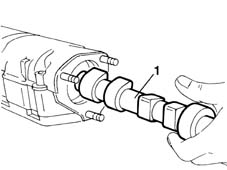

1036G22 camshaft in rh head extension - r+r with head extension and timing belt removed
- Path
- Procedures > 10 ENGINE UNIT > 1036 TIMING SYSTEM > 1036G camshaft (1) in top heads (2) > 1036G22 camshaft in rh head extension - r+r with head extension and timing belt removed
- Kind
- repair procedure (removal / refitting; the operation number is the code)
- Applies to
- engines: 1.6 16v; all production periods
- Interactive page
- https://sloeber94.github.io/elrnDB-fMltpl/en/#/2891238
Applies to: engines: 1.6 16v; all production periods
 Removing
Removing
 Refitting
Refitting1. Withdraw the camshaft from the rear of the right cylinder head extension, taking care not to damage the shaft or its mounts.

Applies to: engines: 1.6 16v; all production periods
Refitting
RemovingFit the camshaft into the cylinder head extension.